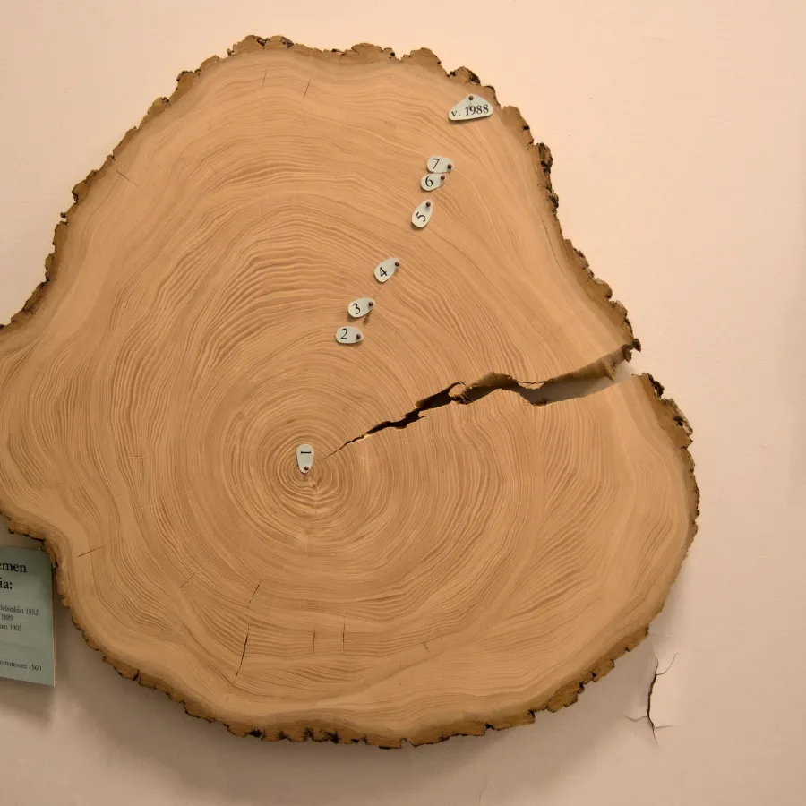

Annual rings
Reading a tree's age from its rings
A computer-vision study in Python and OpenCV. Photographs of wood cross-sections are clustered with K-Means and traced with edge filters, the groundwork for counting annual rings by machine.
One ring, one year
A tree adds one ring of wood every growing season: pale, fast earlywood in spring, dense, dark latewood towards autumn. Count the dark bands from the pith to the bark and you have the tree's age.
Counting by hand is slow, and easy to get wrong where rings crowd together near the bark or where a crack runs through them.
This project, built over two weeks in September 2023, asks how far classical image processing gets on its own: no training data, only the photograph and a handful of OpenCV calls.
The slice beside this text is a poplar that hangs in the Botanical Museum in Helsinki. Every processed image of it on this page is the output of the repository's own code, run with the notebooks' parameters.
From photograph to segments
Two notebooks do the work. One sorts every pixel into a few colour groups, the other looks for sharp changes in brightness. Both start from the same photograph.
Prepare
Read the photographcv2.imread
Reorder colour channelsBGR to RGB
Convert to grayscaleone channel
Cluster
Flatten to a list of pixelsN × 3, float32
K-Means on colourk = 6
Stop after100 rounds or ε 0.85
Restarts10, random centres
Trace
Sobel, x and ykernel 5
Scharr, x3 × 3
Laplaciankernel 3
Canny thresholds100–200, 160–190
6 clusters, 6 edge mapsper photo
Set k, see the slice
K-Means needs to be told how many groups to find. Pick a number and drag across the slice to compare the photograph with what the algorithm keeps.

Six colours. The first script counted clusters and called the result the age, so it would call this poplar 6 years old: the answer is always k. The rings have to be counted along a radius instead.